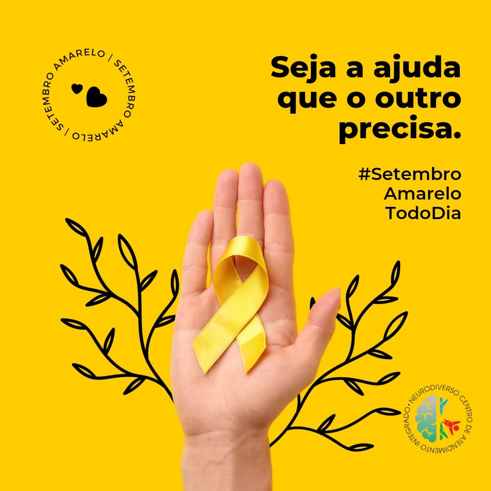

"Entretanto, não podemos afirmar que todas as pessoas que cometem suicídio apresentam esses transtornos. Não podemos nos esquecer de que, muitas vezes, o suicídio acontece de maneira impulsiva diante de algumas situações muito impactantes e inesperadas da vida, como final de relacionamentos, perda de pessoas queridas, abusos ou mesmo crises financeiras. O suicídio também é comum em pessoas que sofrem discriminação, como refugiados, imigrantes, gays, lésbicas, transgêneros e intersexuais.
"O primeiro passo é conversar com essa pessoa, mas aqui fica uma dica importante: deixe que a pessoa fale, sem emitir julgamentos ou opiniões sobre o assunto. Deixe bem claro que sua vontade é apenas ajudar. O que devemos lembrar sempre é que não devemos medir a dor dos outros pelas nossas experiências pessoais e entender que o que não nos afeta não necessariamente não causa dor e sofrimento no ou"
Setembro Amarelo é uma campanha brasileira de prevenção ao suicídio, iniciada em 2015. O mês de setembro foi escolhido para a campanha porque, desde 2003, o dia 10 de setembro é o Dia Mundial de Prevenção do Suicídio.
É nesse mês que no dia 10 se comemora o dia mundial de prevenção do suicídio
Ao mesmo tempo em que há muita discussão sobre o tema e que são organizadas caminhadas, durante esse mês alguns locais são decorados com a cor amarela. Assim, já foram iluminados de amarelo o Cristo Redentor, o Congresso Nacional, a Catedral e o Paço Municipal de Fortaleza, entre outros.
Segundo a Organização Mundial de Saúde (OMS), 32 pessoas se suicidam por dia no Brasil, o que significa que o suicídio mata mais brasileiros do que doenças como a AIDS e o câncer. 